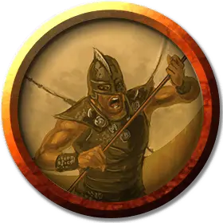

Ураган
Hurricane
Средний Гуманоид (Человек), законно-злой

Класс Доспеха 14
Хиты 33 (6к8 + 6)
Скорость 45 футов
| мод | спас | ||
|---|---|---|---|
| СИЛ | 12 | +1 | +1 |
| ЛОВ | 16 | +3 | +3 |
| ТЕЛ | 13 | +1 | +1 |
| мод | спас | ||
|---|---|---|---|
| ИНТ | 10 | +0 | +0 |
| МДР | 12 | +1 | +1 |
| ХАР | 10 | +0 | +0 |
Навыки Акробатика +5
Чувства пассивное Восприятие 11
Языки Общий, Ауран
Опасность 2 (450 опыта)
Бонус мастерства +2
Особенности
Использование заклинаний. Ураган является заклинателем 3-го уровня. Его базовой характеристикой является Мудрость (Сл спасброска от заклинаний 11, +3 к атакам заклинаниями). Он знает следующие заклинания чародея:
• Заговоры (неограниченно):защита от оружия[blade ward], шквал [gust], свет [light], фокусы [prestidigitation]
• 1 уровень (4 ячейки):падение пёрышком[feather fall], прыжок [jump], волна грома [thunderwave]
• 2 уровень (2 ячейки):порыв ветра [gust of wind]
Защита без доспехов. Пока ураган не носит ни доспехи, ни щит, в его КД включается модификатор Мудрости (уже учтено).
Движение без доспехов. Пока ураган не носит ни доспехи, ни щит, его скорость ходьбы увеличивается на 15 футов (уже учтено).
Действия
Мультиатака. Ураган совершает две рукопашные атаки.
Безоружный удар. Рукопашная атака оружием: +5 к попаданию, досягаемость 5 футов, одна цель. Попадание: дробящий урон 6 (1к6 + 3).
Реакции
Отражение снарядов. Когда по урагану совершается атака из дальнобойного оружия, он уменьшает урон от этой атаки на 1к10 + 9. Если урон уменьшен до 0, то ураган может поймать снаряд, если этот снаряд достаточно мал, чтобы его держать в одной руке, и если у урагана свободна, по крайней мере, одна рука.
Описание
Ураганы во всеуслышание заявляют о своём отвращении к этому прогнившему миру и всей душой стремятся его уничтожить. Эти искусные послушники Воющей Ненависти исповедуют строгие, аскетические взгляды, а во время обучения выполняют особые дыхательные упражнения, имитируя цикличные движения воздуха в воронке урагана. Они считают, что существующий мир должен быть разрушен, чтобы существа, населяющие Материальный План, могли жить, не скованные физическими ограничениями.
Ураганы постоянно спокойны, словно находятся в своеобразном «оке бури», и ощущают окружающую их неистовую активность мира в замедленном движении. С помощью медитаций и мистических практик они учатся вызывать мощные порывы ветра, с лёгкостью ловить снаряды и плавно, будто пёрышко, приземляться при падении.